Что это такое?
Dashchan - модификация клиента для 2ch.hk. Автор исходного клиента - vortexwolf (https://github.com/vortexwolf/2ch-Browser).
Прямая ссылка на скачивание: https://www.dropbox.com/s/m7kswt81js04l3q/Dashchan.apk
Ссылка для аутистов: http://dl.dropboxusercontent.com/s/m7kswt81js04l3q/Dashchan.apk
Разблокировка списка досок: https://www.dropbox.com/s/balzxzmi95pp8n8/DashchanBoards.apk
Ссылка для аутистов: http://dl.dropboxusercontent.com/s/balzxzmi95pp8n8/DashchanBoards.apk
Тестовая версия: https://www.dropbox.com/s/c3w6wtkszz0jlbk/Dashchan_test.apk
Ссылка для аутистов: http://dl.dropboxusercontent.com/s/c3w6wtkszz0jlbk/Dashchan_test.apk
Браузер работает только на Android версии 4.0 и выше. Поддержки более ранних версий не будет.
Почему нет в ГуглПлее?
Приложение было удалено из Google Play, т.к. гугл нашёл там "секс и насилие". Вопрос с маркетом пока что откладывается до лучших времён, последние пару месяцев (с начала июля) у гугла определённо есть с этим проблемы.
Как связаться?
Если приложение вылетает - присылайте логи на емаил. На емаил также можете присылать предложения. На всякий случай указывайте, что пишите по поводу браузера.
E-mail для связи: fukurou.mishiranu@gmail.com или mishiranu@inbox.ru
Отзывы и идеи отписывайте на реформал: http://dashchan.reformal.ru
Информация о приложении и FAQ доступны по этой ссылке: http://pastebin.com/FC8L1rYg
Микро-FAQ:
1. Если не работают картинки, вебм или не отображаются доски - включите в настройках HTTPS, домен 2ch.pm
2. То же самое стоит сделать, если программа постоянно делает DDOS проверку.
3. Если при установке "синтаксическая ошибка" - либо андроид ниже 4.0, либо криво скачан apk.
4. Тестовая версия отличается от нетестовой только тем, что валит в лог для отладки почти всё, что может.
5. Если не работают гифки, слишком много полосок, не работает пасскод и так далее - сначала поставь тестовую, потом отправляй логи, если проблема не ушла.
Снятие логов для самых маленьких: logcat -d > /sdcard/log.txt
Реквизиты для доната:
QVC (карта): 4890494002198653
ЯД: 410012427548780
Так же разработчик Dashchan принимает анонимные донаты через QIWI Яйца, для их этого нужно пройти по этой ссылке:
https://w.qiwi.com/eggs/main.action
Вортекс-тред ищите в другом месте.
Предыдущий тред - https://2ch.hk/mobi/res/334170.html
| >> | Ты где там бамплимит увидел, наркоман? |
| >> | >>341979 |
| >> | Есть новая версия? |
| >> | >>342010 |
| >> | Вортекс заработал, съебывайте с этой параши. |
| >> | >>342110 |
| >> | >>342145 |
| >> | "вложения слишком большие". Что за залупа? |
| >> | >>342110 |
| >> | >>342162 |
| >> | >>342182 |
| >> | >>342200 |
| >> | >>342200 |
| >> | >>342202 |
| >> | >>342206 |
| >> | >>342208 |
| >> | >>342182 |
| >> | >>342211 |
| >> | >>342214 |
| >> | >>342206 |
| >> | >>342215 |
| >> | >>342217 |
| >> | >>342216 |
| >> | >>342220 |
| >> | >>342215 |
| >> | >>342220 |
| >> | >>342228 |
| >> | >>342244 |
| >> | >>342224 |
| >> | >>342290 |
| >> | >>342145 |
| >> | Все время двочую то с планшета, то с телефона. Было бы охуенно сделать какую-либо синхронизацию между устройствами (скрытые треды, избранные доски, настройки). |
| >> | >>342343 |
| >> | >>342347 |
| >> | >>342353 |
| >> | >>342358 |
| >> | >>342326 |
| >> | >>342369 |
| >> | >>342353 |
| >> | >>342216 |
| >> | >>342374 |
| >> | >>342402 |
| >> | >>342402 |
| >> | >>342406 |
| >> | >>342406 |
| >> | Когда новая версия выйдет? Судя по реформалу, сделано уже не мало. Почти месяц без обновления сидим. |
| >> | >>342409 |
| >> | File: 14093414515770s.jpg (60.00 KB, 720x951)>>342412 |
| >> | >>342413 |
| >> | >>342413 |
| >> | >>342415 |
| >> | Прости, не успел написать сразу, дополню. |
| >> | >>342419 |
| >> | >>342420 |
| >> | File: 14093422037830s.jpg (8.00 KB, 468x240)>>342422 |
| >> | >>342424 |
| >> | >>342425 |
| >> | >>342427 |
| >> | >>342427 |
| >> | >>342429 |
| >> | >>342433 |
| >> | >>342433 |
| >> | >>342402 |
| >> | File: 14093440953720s.jpg (87.00 KB, 1000x1000)Так как там с дашеговном? Вортекс-бог освятил этот итт своим присутствием. |
| >> | >>342443 |
| >> | File: 14093491840690s.jpg (146.00 KB, 480x800)>>342447 |
| >> | >>342474 |
| >> | >>342474 |
| >> | >>342475 |
| >> | >>342477 |
| >> | >>342476 |
| >> | >>342478 |
| >> | Слава Вортексу! Наконец-то этот пидор соизволил все починить. Спасибо хуепуталу-пониебу за его троянокостыль без исходников, но увы, теперь он не нужен. И кстати на телефоне у меня нет ни симки, ни каких-то интересных файлов, так что соси хуй:3 |
| >> | File: 14093503182870s.jpg (550.00 KB, 275x206)>>342447 |
| >> |
| >> | Дашапетухи, видите колобка? |


| >> | File: 14093510995990s.jpg (61.00 KB, 957x537) |
| >> | File: 14093511340480s.jpg (67.00 KB, 729x742) 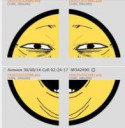 >>342490 |
| >> | >>342489 |
| >> | File: 14093513056370s.jpg (67.00 KB, 480x800) |
| >> | После дашчана двочбразер уже не торт. |
| >> | >>342490 |


| >> | File: 14093685879650s.jpg (410.00 KB, 1080x1840) 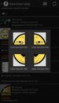 >>342526 |
| >> | File: 14093691122310s.jpg (44.00 KB, 480x320) 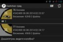 Только по частям. |
| >> | File: 14093697418700s.jpg (34.00 KB, 511x480)>>342490 |
| >> | >>342534 |
| >> | >>342110 |
| >> | >>342110 |
| >> | >>342536 |
| >> | >>342485 |
| >> | >>342535 |
| >> | Чет последнее время еле еле страницы грузит |
| >> | >>342553 |
| >> | >>342553 |
| >> | >>342424 |
| >> | >>342537 |
| >> | Хуя се как автор жтого трояна тут семенит. Соси хуй, быдло! |
| >> | Сука, это аура /моби/ что ли? Какого хуя в каждом треде срач? |
| >> | >>342606 |
| >> | >>342579 |
| >> | Хуй |
| >> | >>342484 |
| >> | File: 14093929079480s.jpg (161.00 KB, 978x384)>>342527 |
| >> | Автор Даша планирует прикрутить архивач? Мобильной версии у архивача нет и читать его не очень удобно. А треды я обычно там и читаю, т.к. плавать в говно/b/ - занятие не из приятных. Неплохо было бы его во фрейм в виде доски вынести. |
| >> | >>342538 |
| >> | >>342712 |
| >> | >>342776 |
| >> | >>342780 |
| >> | >>342794 |
| >> | >>342794 |
| >> | >>342794 |
| >> | >>342600 |
| >> | >>342881 |
| >> | >>342883 |
| >> | >>342886 |
| >> | >>342888 |
| >> | >>342896 |
| >> | >>342900 |
| >> | >>342902 |
| >> | >>342904 |
| >> | >>342908 |
| >> | >>342865 |
| >> | >>342902 |
| >> | >>342918 |
| >> | >>342534 |
| >> | >>342920 |
| >> | >>342780 |
| >> | Даша, когда новая версия? |
| >> | >>343166 |
| >> | >>343166 |
| >> | File: 14094807016360s.jpg (42.00 KB, 1080x1920)ну что за хуйня опять снова происходит? |
| >> | >>343305 |
| >> | >>343307 |
| >> | >>343311 |
| >> | >>343311 |
| >> | >>343305 |
| >> | Исходники всё ещё закрыты ПО ЛИЧНЫМ ПРИЧИНАМ? |
| >> | >>343391 |
| >> | >>343393 |
| >> | >>343394 |
| >> | >>343396 |
| >> | >>343302 |
| >> | >>343467 |
| >> | >>343475 |
| >> | Тогда в следующем треде напишите минимальные системные требования: четырёхядерный процессор 2.3 ГГц, оперативная память 8 ГБ. Чтобы лишних вопросов не возникало по тормозам. |
| >> | >>343477 |
| >> | >>343475 |
| >> | >>343490 |
| >> | File: 14095014853240s.jpg (47.00 KB, 1280x720)>>343484 |
| >> | File: 14095019281490s.jpg (7.00 KB, 206x119)>>343496 |
| >> | >>343493 |
| >> | >>343475 |
| >> | >>343514 |
| >> | File: 14095052178850s.jpg (171.00 KB, 1080x1920) 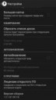 >>343519 |
| >> | >>343541 |
| >> | >>343541 |
| >> | File: 14095112172560s.jpg (257.00 KB, 1080x1920) 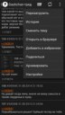 >>343558 |
| >> | >>343632 |
| >> | File: 14095119086600s.jpg (183.00 KB, 1080x1920) 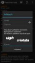 >>343641 |
| >> | >>343650 |
| >> | >>343650 |
| >> | >>343650 |
| >> | >>343641 |
| >> | >>343653 |
| >> | >>343673 |
| >> | >>343673 |
| >> | >>343678 |
| >> | File: 14095134706020s.jpg (134.00 KB, 1080x1920) >>343668 |
| >> | >>343678 |
| >> | >>343678 |
| >> | >>343683 |
| >> | >>343683 |
| >> | >>343632 |
| >> | >>343696 |
| >> | >>343696 |
| >> | >>343698 |
| >> | File: 14095149112230s.jpg (207.00 KB, 720x1280) 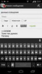 >>343698 |
| >> | >>343701 |
| >> | >>343699 |
| >> | >>343703 |
| >> | >>343703 |
| >> | >>343702 |
| >> | >>343708 |
| >> | >>343701 |
| >> | >>343712 |
| >> | >>343718 |
| >> | File: 14095160663800s.jpg (248.00 KB, 1080x1920) 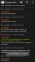 >>343718 |
| >> | File: 14095174118880s.jpg (183.00 KB, 1080x1920) 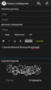 С включённой большой капчей. |
| >> | >>343710 |
| >> | >>343733 |
| >> | File: 14095176260570s.jpg (25.00 KB, 512x384)>>343720 |
| >> | >>343732 |
| >> | File: 14095181897610s.jpg (204.00 KB, 1080x1920) 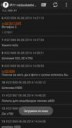 >>343735 |
| >> | File: 14095183694260s.jpg (95.00 KB, 645x445)>>343740 |
| >> | >>343743 |
| >> | >>343744 |
| >> | >>343746 |
| >> | File: 14095188514800s.jpg (52.00 KB, 604x604)>>343750 |
| >> | >>343751 |
| >> | >>343759 |
| >> | >>343760 |
| >> | >>343760 |
| >> | >>343762 |
| >> | >>343632 |
| >> | >>342110 |
| >> | Хочется режим чтения в фулскрине как в pocket. |
| >> | >>343792 |
| >> | >>343650 |
| >> | >>343804 |
| >> | ОП, еще был такой баг, что вкладку с тредом закрыл, а она продолжает автоматически обновляться. |
| >> | >>343792 |
| >> | >>343811 |
| >> | File: 14095711884650s.jpg (372.00 KB, 2000x2000)Ахах бедные дашапетухи, все еще сосут, ожидая очередное обновление дашеговна. Поссал вам на ебло бггг |
| >> | >>343969 |
| >> | >>343929 |
| >> | >>343976 |
| >> | >>343976 |
| >> | >>343978 |
| >> | >>343969 |
| >> | Когда обновишь тестовую версию, заебал!? |
| >> | >>343929 |
| >> | File: 14096233823570s.jpg (167.00 KB, 1920x1080)Что-то опять не открывается на pm и https или при попытке постинга пишет, что доска не существует. |
| >> | Сейм щит чините уже |
| >> | При попытке отправить пост в /b/ пишет "доска не существует", чини сука. |
| >> | test |
| >> | >>344328 |
| >> | Почему-то если отправлять данные в виде multipart, то сервер их не воспринимает. Причём отправленные multipart-данные со стороны браузера работают нормально. |
| >> | В школу ещё не скоро, так что посидел немного, разобрался. |
| >> | >>344351 |
| >> | >>344367 |
| >> | Пофиксим. |
| >> | >>344418 |
| >> | >>344425 |
| >> | Test |
| >> | Спасибо, что удалили. И сам не знаю, с чего начал отвечать на столь очевидную попытку троллинга. |
| >> | Тест |
| >> | Dashchan v1.0.1 лежит второй день,ридонли.При постинге выкидывает-Доска отсутствует.Факаное поделие вортекса v1.5.1 не открывает треды,только список досок.Херня ей-бо.Смена настроек .pm .hk HTTPS-до безды,толку нет. |
| >> | отправка постов пофикшена |
| >> | File: 14096529499690s.jpg (11.00 KB, 312x295)>>344476 |
| >> | >>344476 |
| >> | Test |
| >> | File: 14096570194870s.jpg (30.00 KB, 400x604)Test |
| >> | >>344418 |
| >> | File: 14096626695630s.jpg (118.00 KB, 768x1280) 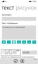 Очередной отсос ведроблядей |
| >> | >>344533 |
| >> | File: 14096632540220s.jpg (218.00 KB, 1080x1920) 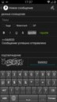 >>344533 |
| >> | >>344533 |
| >> | Давно не следил за этой темой, так что там? Можно качать ничего не опасаясь теперь? |
| >> | >>344568 |
| >> | >>344573 |
| >> | >>344576 |
| >> | >>344576 |
| >> | >>344573 |
| >> | >>344588 |
| >> | Тест |
| >> | Боже какое кривое, глючное говно! |
| >> | >>344709 |
| >> | Где новая версия, блядь? 23 дня уже прошло, пидор ты гнойный. Пили быстраблядь. |
| >> | >>344578 |
| >> | >>344764 |
| >> | >>344774 |
| >> | >>344775 |
| >> | >>344778 |
| >> | >>344775 |
| >> | >>344784 |
| >> | >>344784 |
| >> | File: 14097332313480s.jpg (142.00 KB, 540x960) 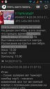 Ну вот как мне узнать, во сколько был создан тред? |
| >> | File: 14097336033440s.jpg (173.00 KB, 768x1024) 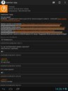 >>344871 |
| >> | File: 14097349665680s.jpg (179.00 KB, 720x1280) 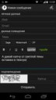 А давай капчу от светлой темы вставим в темную, ведь намного лечше её видно |
| >> | >>344886 |
| >> | Тем временем, конкурирующая фирма запилила работоспособный поиск тредов/постов. |
| >> | >>344977 |
| >> | >>344977 |
| >> | >>345106 |
| >> | >>345309 |
| >> | >>345319 |
| >> | >>345324 |
| >> | Спрошу тут. Есть браузер, в котором работает поиск? Не хочу шквариться об эти ваши приложения. |
| >> | >>345328 |
| >> | >>345324 |
| >> | >>345340 |
| >> | >>345350 |
| >> | >>345352 |
| >> | >>345350 |
| >> | >>345359 |
| >> | >>345362 |
| >> | >>345363 |
| >> | >>345378 |
| >> | >>345378 |
| >> | >>345381 |
| >> | >>345350 |
| >> | >>345385 |
| >> | >>345385 |
| >> | >>345400 |
| >> | >>345401 |
| >> | >>345407 |
| >> | >>345474 |
| >> | File: 14098161780240s.jpg (183.00 KB, 1080x1920) 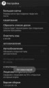 А тем временем тестер снова на связи. Жду ваших ответов. |
| >> | >>345513 |
| >> | File: 14098164459940s.jpg (488.00 KB, 1080x1920) 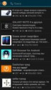 >>345516 |
| >> | >>345518 |
| >> | >>345518 |
| >> | >>345518 |
| >> | >>345518 |
| >> | >>345528 |
| >> | >>345533 |
| >> | >>345535 |
| >> | >>345546 |
| >> | >>345528 |
| >> | >>345552 |
| >> | Что-то у меня со второй тестовой версии с бордами не постится, а с Вортекса постится. |
| >> | >>345588 |
| >> | >>345518 |
| >> | >>345518 |
| >> | >>345636 |
| >> | >>345616 |
| >> | >>345644 |
| >> | >>345613 |
| >> | Опять из Дэша пишет об ошибке, хотя отправляет после паузы, а из Вортекса не пишет ничего, отправляя сразу. |
| >> | >>345636 |
| >> | File: 14098393385220s.jpg (238.00 KB, 550x550)Настало время для обновления. |
| >> | А я и забыл, как макаба превью png ломает, лол. |
| >> | >>345727 |
| >> | >>345727 |
| >> | >>345727 |
| >> | Охуенно, теперь и треды стали при скролле тормозить. Да ты у нас герой. |
| >> | >>345734 |
| >> | >>345748 |
| >> | >>345727 |
| >> | >>345756 |
| >> | >>345756 |
| >> | >>345756 |
| >> | >>345776 |
| >> | >>345780 |
| >> | >>345784 |
| >> | >>345795 |
| >> | File: 14098439680110s.jpg (251.00 KB, 1080x1920) 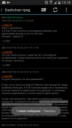 >>345801 |
| >> | >>345798 |
| >> | >>345801 |
| >> | К сожалению, картинки с разрешением большим, чем 2500, показывают вместо себя диагонально-шахматную доску. |
| >> | И большая капча неудобна на планшете, так как вместо одной строки, как было, влезла над вводом капчи и Отправить. |
| >> | >>345832 |
| >> | >>345839 |
| >> | На предыдущей версии иногда, но не каждый раз помогало прижать палец к экрану с открытой картинкой и потянуть его вверх-вниз. Тогда, пока палец был прижат, появлялось изображение. Теперь пока не встретил больших картинок, на которых бы этот метод работал. Все равно, благодарю автора за его труд и тестеров за их труд. |
| >> | >>345727 |
| >> | >>345727 |
| >> | Прокрутка опять лагает, ползунок не активен. |
| >> | Дашка, можешь пока что не делать интерфейс в стиле 5.0? Выглядит на нашем ведре это крайне уебищно, сделай этот дизайн опциональным в настройках. Как выйдет официальная версия 5.0 - пожалуйста. |
| >> | File: 14098527743810s.jpg (62.00 KB, 736x736)азаза наконец и дашапетухи дождались обновления дашапараши. Рад за вас, юные говноедики. |
| >> | >>345908 |
| >> | File: 14098541765770s.jpg (54.00 KB, 600x600)>>345934 |
| >> | File: 14098545905590s.jpg (64.00 KB, 604x563)>>345952 |
| >> | Все еще не убран этот жуткий ОТВЕТ Вортексу. |
| >> | Очень хорошая идея дополнить скрепку Приложение выбором галерей с картинками на устройстве. |
| >> | Все-таки Тема должна быть сразу после номера поста. Потом Имя, потом уже временные параметры поста, строкой ниже. Иначе получается так, что слева у нас миниатюра картинки, справа от нее все данные, кроме Темы, которая находится точно под картинкой. |
| >> | Господи, какая же хуйня стала. Дикие лаги при просмотре тредов и списков. ОТВЕТ ОТВЕТА ОТВЕТОВ СУКА, даже не выделены как кнопки, убрано никому не мешавшее НЕТ НОВЫХ СООБЩЕНИЙ. |
| >> | >>345985 |
| >> | >>345993 |
| >> | >>345993 |
| >> | >>345999 |
| >> | >>346004 |
| >> | Иконка сажи уебанская. Даже не сразу догадался, что это она. Направленная вниз стрелка - лучше. Особенно красная. |
| >> | >>346009 |
| >> | >>346015 |
| >> | File: 14098586976150s.jpg (80.00 KB, 720x1280)Скрытые доски такие скрытые. |
| >> | >>346029 |
| >> | >>346038 |
| >> | >>346044 |
| >> | Блять, когда уже дашчан перестанет крашиться при приближении/отдалении пикч.gif в особенности? Виртуализация заебло уже, это можно починить? Версия, самая последняя возможная. |
| >> | >>346047 |
| >> | >>346052 |
| >> | >>346004 |
| >> | >>346066 |
| >> | >>346072 |
| >> | >>346077 |
| >> | И ещё мне не нравится, что раньше, когда в списке тредов нажимаешь на логотип и выдвигается боковая панель - три полоски слева от логотипа задвигались в другую стороны, а теперь они больше не движутся, плохо сделано. |
| >> | >>346098 |
| >> | Даш, прикрути включение/выключение отображения превьюшек в зависимости от подключения, цены тебе не будет. И не так уж и сложно это, ящитаю. |
| >> | >>346117 |
| >> | >>342485 |
| >> | >>345946 |
| >> | >>345805 |
| >> | File: 14098912600000s.jpg (85.00 KB, 480x800) 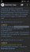 >>345900 |
| >> | >>346098 |
| >> | File: 14098924015960s.jpg (62.00 KB, 720x1280)Перестали открываться картинки. |
| >> | >>346185 |
| >> | >>346018 |
| >> | >>346173 |
| >> | >>346185 |
| >> | >>346192 |
| >> | File: 14098947512720s.jpg (68.00 KB, 480x800) 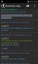 >>346193 |
| >> | Чому убрали выбор места хранения кэша? Где он хранится сейчас? |
| >> | >>346196 |
| >> | >>346205 |
| >> | >>346168 |
| >> | Выделение одного слова двойным тапом не работает, выделяет весь текст. Если по выделеному всему тексту еще тапнуть пару раз все крашится. |
| >> | >>346173 |
| >> | >>346196 |
| >> | >>346210 |
| >> | >>346210 |
| >> | >>346199 |
| >> | >>346222 |
| >> | >>346223 |
| >> | Лаги усиливаются при прокрутке постов, когда на экране их много. Когда скроллишь один длиннопост, например ОП-пост, то терпимо, но как только доходишь до остальных - всё лагает, если попадается опять длиннопост, то пока прокручиваешь его - лаги опять уменьшаются. В списке тредов лагает перманентно ещё с самой первой версии, но меньше, чем в самих тредах. |
| >> | >>346223 |
| >> | >>346250 |
| >> | >>346254 |
| >> | >>346256 |
| >> | File: 14099028006940s.jpg (51.00 KB, 441x705) 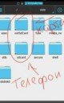 >>346254 |
| >> | >>346260 |
| >> | >>346262 |
| >> | А у меня sdcard это внешняя карта. Убьет мне ее дэшчан теперь |
| >> | Я смотрю, на архиваче можно авторизоваться прямо через дэшчан? |
| >> | Когда нормальные вкладки будут? |
| >> | >>346297 |
| >> | >>346299 |
| >> | Даша, не хотел ли ты запилить чатик в баузере, аки как на сперме у эстра? Что бы господа могли лампово общаться без всяких яблочников, спермачей и вортексо-петухов, ибо они срут вечно там, где не нужно. |
| >> | ОП, не слушай долбоебов, все охуенно. Вортексопетухи проходят нахуй. |
| >> | Алсо, можно сделать кнопку обновления постов скрываемой? |
| >> | >>346302 |
| >> | >>346319 |
| >> | >>346302 |
| >> | >>346320 |
| >> | ОП, ПИЛИ НЕЙТРОН, ЕБАНА В РОТ, СКОЛЬКО ПРОСИТЬ!!!??? |
| >> | Что типа минимум - четырёхядерный процессор 2.3 Ггц, 8 ГБ оперативной памяти, игровая видеокарта встроенная |
| >> | >>346375 |
| >> | File: 14099188217470s.jpg (77.00 KB, 480x800)>>346375 |
| >> | >>346195 |
| >> | >>346385 |
| >> | >>346414 |
| >> | >>346282 |
| >> | >>346421 |
| >> | Оп, а так и не понял, зачем нужны кликабельные посты? Не из-за них ли такие лаги? |
| >> | >>346434 |
| >> | >>346213 |
| >> | >>346432 |
| >> | >>346442 |
| >> | File: 14099300851640s.jpg (319.00 KB, 1080x1920)Так даже красивее. |
| >> | >>346467 |
| >> | >>346462 |
| >> | File: 14099303359420s.jpg (180.00 KB, 720x1280) 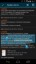 >>346462 |
| >> | File: 14099315130410s.jpg (50.00 KB, 667x523) 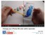 >>346471 |
| >> | >>346472 |
| >> | >>346491 |
| >> | >>346518 |
| >> | >>346460 |
| >> | >>346531 |
| >> | >>346531 |
| >> | File: 14099422235660s.jpg (47.00 KB, 480x800)Новый яркий дэшчан без лагов уже в этом месяце. |
| >> | >>346639 |
| >> | >>346666 |
| >> | >>346600 |
| >> | >>346687 |
| >> | Новая версия работает плавнее вротекса и сейчас обкатывается. пруфов не будет |
| >> | File: 14099632512250s.jpg (818.00 KB, 500x281)>>341977 |
| >> | >>346751 |
| >> | >>346302 |
| >> | File: 14099735763200s.jpg (404.00 KB, 800x800)Можно ли как-то в режиме просмотра картинок убрать верхний бар? А то он блядь очень дохуя места закрывает и нормально картинки рассмотреть не дает. |
| >> | 1. Автор, измени подгонку картинок с меньшей стороны на большую, как было в двачброузере, а то миниатюры растянутых картинок плохо выглядят, пкрл. |
| >> | >>346774 |
| >> | >>346762 |
| >> | File: 14099886527830s.jpg (62.00 KB, 224x256)Ещё одно обновленице. |
| >> | Чем сегодняшняя версия отличается от прошлой? |
| >> | >>346836 |
| >> | >>346774 |
| >> | >>346835 |
| >> | >>346841 |
| >> | >>346842 |
| >> | >>346835 |
| >> | >>346852 |
| >> | >>346858 |
| >> | >>346861 |
| >> | >>346868 |
| >> | Думаю, если в этот тред покидают картинок разрешением от 3000 на 3000 и выше, с разной степенью сжатия и разными типами файлов, это будет полезно не только мне. К вечеру думаю написать. |
| >> | >>346874 |
| >> | >>346874 |
| >> | >>346879 |
| >> | >>346877 |
| >> | >>346882 |
| >> | >>346879 |
| >> | >>346882 |
| >> | >>346852 |
| >> | >>346888 |
| >> | >>346890 |
| >> | >>346885 |
| >> | >>346891 |
| >> | >>346897 |
| >> | >>346898 |
| >> | >>346852 |
| >> | >>346835 |
| >> | >>346907 |
| >> | >>346904 |
| >> | >>346913 |
| >> | Обновился через приложение. Охуенно. |
| >> | >>346914 |
| >> | >>346835 |
| >> | >>346931 |
| >> | 1.3.0 не тормозил, 1.3.1 не тормозит. |
| >> | >>346888 |
| >> | >>346935 |
| >> | >>346936 |
| >> | >>346937 |
| >> | File: 14099998796340s.jpg (81.00 KB, 720x1280)>>346938 |
| >> | Двачую смену иконки. |
| >> | >>346940 |
| >> | >>346940 |
| >> | >>346943 |
| >> | >>346942 |
| >> | >>346945 |
| >> | >>346944 |
| >> | >>346835 |
| >> | >>346948 |
| >> | >>346949 |
| >> | Иногда, чтоб появилась синяя хуйнюшка для быстрой прокрутки длинного треда, надо поворачивать телефон вертикально, а потом возвращаться в горизонтальное положение. Это фиксится вообще? |
| >> | >>346953 |
| >> | >>346956 |
| >> | >>346954 |
| >> | >>346946 |
| >> | >>346956 |
| >> | >>346960 |
| >> | >>346935 |
| >> | >>346966 |
| >> | >>346959 |
| >> | Картинки, вместо которых раньше была "скатерть", теперь не отображаются в программе при раскрытии миниатюры, хотя скачиваются и могут быть просмотрены через Галерею. При просмотре безфоновых изображений в программе, фон заменяется "скатертью".Подробнее напишу автору. У кого есть схожие проблемы, пишите свои устройства, прошивки, версии андроида и давайте ссылки на картинки, которые не смогли просмотреть. |
| >> | Только что проверил в теперь уже альтернативном ДЧ Вортекс-браузере, там такой проблемы нету и картинка масштабируется так, чтобы занять горизонтальным срезом весь экран. Но в ВБ ее можно увеличить, но нельзя уменьшить, как в ДЧ. В ДЧ уменьшение картинки, которая слишком большая и не видна, невозможно. Иногда начинает пропадать картинка предкритического размера, но такую я нашел только одну. |
| >> | >>346940 |
| >> | >>347020 |
| >> | Как скробблить на акк. ласт.фм с андроида/ВК? |
| >> | >>347022 |
| >> | >>347029 |
| >> | >>347032 |
| >> | >>347042 |
| >> | >>347042 |
| >> | А почему бы не разворачивать длинные посты коротким тапом по телу поста? А то целиться в "развернуть" зачем-то нужно |
| >> | >>347073 |
| >> | >>347073 |
| >> | >>347042 |
| >> | >>347072 |
| >> | >>347080 |
| >> | Я думаю сделать тоньше разделители между постами. |
| >> | >>347085 |
| >> | File: 14100149260030s.jpg (2.10 MB, 1080x1920)>>347080 |
| >> | >>347085 |
| >> | >>347091 |
| >> | >>347085 |
| >> | Еще прошу вернуть значок с цифрой вместо ОТВЕТА и ни в коем случае не отказываться от ленты ответов. |
| >> | >>347089 |
| >> | >>347096 |
| >> | >>347096 |
| >> | >>346835 |
| >> | >>347096 |
| >> | >>347098 |
| >> | >>347104 |
| >> | >>346471 |
| >> | Я тоже за тонкие разделители |
| >> | >>347104 |
| >> | >>347105 |
| >> | >>347085 |
| >> | >>347118 |
| >> | Есть ли у кого сборник ссылок на предыдущие посты, ныне покоящиеся на архиваче? Пользоваться им не умею. Есть ли желание автора включить этот список в pastbin или хотя бы в шапку треда? |
| >> | >>347085 |
| >> | >>347171 |
| >> | >>347174 |
| >> | >>347175 |
| >> | >>347178 |
| >> | >>347182 |
| >> | >>347183 |
| >> | >>347187 |
| >> | >>346838 |
| >> | Даша, я люблю тебя. Приложение для чтения ракоборды просто заебок. Вортекс сосёт. |
| >> | Наконец-то появилась плавность. Хоспади, 10/10 просто. |
| >> | >>347209 |
| >> | >>347085 |
| >> | File: 14100281882650s.jpg (16.00 KB, 360x360)rate me mobi |
| >> | >>347217 |
| >> | >>347217 |
| >> | File: 14100296441230s.jpg (16.00 KB, 360x360)>>347225 |
| >> | >>347237 |
| >> | >>347178 |
| >> | >>347237 |
| >> | >>347240 |
| >> | >>347242 |
| >> | >>347242 |
| >> | Убери тень |
| >> | >>347243 |
| >> | File: 14100314816620s.jpg (17.00 KB, 360x360)>>347271 |
| >> | >>347279 |
| >> | >>347279 |
| >> | >>347285 |
| >> | >>347217 |
| >> | >>347295 |
| >> | >>347294 |
| >> | >>347245 |
| >> | File: 14100329705330s.jpg (12.00 KB, 300x300) >>347302 |
| >> | >>347307 |
| >> | >>347311 |
| >> | File: 14100334238080s.jpg (10.00 KB, 247x400) Вот такой уклон должен быть |
| >> | >>347315 |
| >> | >>347314 |
| >> | Даша, сделай опциональный выбор подписи "ответ". Глаза мозолит. |
| >> | >>347319 |
| >> | >>347321 |
| >> | >>347322 |
| >> | >>347316 |
| >> | >>347327 |
| >> | >>347329 |
| >> | >>347329 |
| >> | >>347334 |
| >> | >>347334 |
| >> | >>347329 |
| >> | >>347296 |
| >> | >>347347 |
| >> | File: 14100362888600s.jpg (152.00 KB, 550x360)Чего не упростить всё |
| >> | >>347351 |
| >> | >>347351 |
| >> | File: 14100372610110s.jpg (301.00 KB, 498x792)>>347355 |
| >> | File: 14100385415870s.jpg (345.00 KB, 1494x792)Пойду я лучше спать |
| >> | >>347362 |
| >> | Мне не нравится новое отображение ответов к посту. Почему убрали вариант со значком письма? Это сразу выделялось и интуитивно было понятно, посты четче разделялись, а теперь какая-то текстовая чехарда в треде, зачем мне напрягать зрение и читать еще одно лишнее слово, когда раньше фоновым зрением итак понятно было где конец поста и что к нему есть ответы. Может исправить это все? Автор вертай все взад, пожалуйста. Тред не читал. |
| >> | >>346835 |
| >> | >>347362 |
| >> | >>347372 |
| >> | >>347372 |
| >> | >>347374 |
| >> | Сделай пожалуйста ответ чуть по-ярче. Реально трудно разглядеть этот серый цвет. Ну или сделай настройку цвета надписей (вообще идеальный вариант). |
| >> | >>347377 |
| >> | >>347378 |
| >> | >>347380 |
| >> | >>347378 |
| >> | >>347380 |
| >> | >>347327 |
| >> | File: 14100509355840s.jpg (12.00 KB, 540x130)Вылетает новая версия при входе в некоторые треды. Пример пикрелейтед. |
| >> | Обновился. |
| >> | >>347396 |
| >> | >>346835 |
| >> | >>347294 |
| >> | >>347396>>347410 |
| >> | >>347414 |
| >> | >>347369 |
| >> | >>347377 |
| >> | Должен поблагодарить автора за работу с отображением изображений. Теперь можно двумя пальцами уменьшить картинку до ее оригинального размера и она зафиксируется на нем. Если, конечно, ее разрешение меньше экранного. |
| >> | >>347369 |
| >> | Всегда на Acer a510 и иногда на nexus5 вылетает при попытки открыть вторую страницу. Раньше такой хуйни не было |
| >> | >>347448 |
| >> | >>347388 |
| >> | >>347395 |
| >> | >>347396 |
| >> | File: 14100675325990s.jpg (45.00 KB, 604x604)>>347329 |
| >> | >>347447 |
| >> | >>347453 |
| >> | >>347463 |
| >> | >>347457 |
| >> | >>347456 |
| >> | >>347474 |
| >> | >>347465 |
| >> | Тоже ратую за возвращение иконки ответов под постом, и сделать белую капчу для черной темы. После перезагрузки все лаги совсем пропали. |
| >> | >>347474 - >>347396 |
| >> | >>347477 |
| >> | >>347479 |
| >> | >>347476 |
| >> | >>347481 |
| >> | >>347482 |
| >> | >>347486 |
| >> | File: 14100697425220s.jpg (229.00 KB, 807x301)>>347470 |
| >> | >>347487 |
| >> | >>347488 |
| >> | File: 14100703418060s.jpg (92.00 KB, 500x306)>>347490 |
| >> | >>347494 |
| >> | >>347494 |
| >> | File: 14100709522080s.jpg (328.00 KB, 656x752)>>347497 |
| >> | >>347501 |
| >> | >>346835 |
| >> | File: 14100712141750s.jpg (154.00 KB, 750x2200)>>347503 |
| >> | >>347504 |
| >> | >>347505 |
| >> | >>347505 |
| >> | File: 14100716221900s.jpg (35.00 KB, 200x200)>>347237 |
| >> | >>347506 |
| >> | >>347513 |
| >> | >>347514 |
| >> | >>347506 |
| >> | >>347514 |
| >> | >>347474 |
| >> | >>347518 |
| >> | File: 14100724571560s.jpg (25.00 KB, 400x300)>>347521 |
| >> | >>347523 |
| >> | >>347447 |
| >> | File: 14100732761220s.jpg (71.00 KB, 480x748)>>347512 |
| >> | >>347529 |
| >> | Предлагаю даше вариант выпилить почти все "тонкие настройки" нахуй и оставить все жестко так, как стоит по-дефолту. А уже в расширенном меню, которое будет по 9999 тапов на менюшке, можно будет сменить .pm на что угодно или включить-выключить https и все остальное дерьмо, милое сердцу каштомодрочеров. Короче, ios-way, только с адвансд опциями. Тогда экран настроек будет лаконичен и прост. |
| >> | >>347515 |
| >> | >>347537 |
| >> | >>347537 |
| >> | >>347540 |
| >> | >>347545 |
| >> | >>347547 |
| >> | >>347551 |
| >> | >>347552 |
| >> | >>347212 |
| >> | >>347526 |
| >> | >>347571 |
| >> | Обновил тестовую версию https://www.dropbox.com/s/c3w6wtkszz0jlbk/Dashchan_test.apk |
| >> | >>347606 |
| >> | >>347610 |
| >> | >>347606 |
| >> | >>347612 |
| >> | >>347611 |
| >> | >>347610 |
| >> | >>347615 |
| >> | >>347617 |
| >> | >>347606 |
| >> | >>347618 |
| >> | >>347615 |
| >> | >>347576 |
| >> | >>347626 |
| >> | >>347626 |
| >> | >>347629 |
| >> | >>347632 |
| >> | >>347623 |
| >> | >>347634 |
| >> | Автор, благодарю за то, что так быстро ответил на вчерашнее письмо о проблемах с просмотром картинок. Вроде, часть стали показываться, но более подробное письмо сейчас только начну писать. |
| >> | >>347637 |
| >> | >>347606 |
| >> | Автор, на Реформал зайдешь? Там немного новых реквестов/комментариев. И два реквеста DELETED можно удалить (автор реквестов это делать не может). |
| >> | >>347645 |
| >> | File: 14100825759530s.jpg (451.00 KB, 768x1280)Лично мне старая иконка была приятней. |
| >> | >>347649 |
| >> | File: 14100827818600s.jpg (31.00 KB, 277x350)>>347653 |
| >> | >>347652 |
| >> | >>347653 |
| >> | >>347660 |
| >> | >>347652 |
| >> | >>347644 |
| >> | >>347665 |
| >> | >>347671 |
| >> | >>347672 |
| >> | >>347652 |
| >> | >>347674 |
| >> | >>347672 |
| >> | Письмо нашлось! Оно в папке Важное. |
| >> | >>347678 |
| >> | >>347683 |
| >> | >>347606 |
| >> | >>347684 |
| >> | >>347686 |
| >> | >>347669 |
| >> | >>347690 |
| >> | >>347691 |
| >> | >>347692 |
| >> | Кажется устанавливаются условия исчезновения отображения увеличенной картинки в три раза более высокой, чем широкой. При портретной ориентации экрана она исчезает после увеличения, если даже в увеличенном виде еще не закрывает собой ширину экрана. Раскрытие ее двойным тапом шириной во весь экран помогает, если только ее растянуть немножечко еще. Такое у меня только на планшете. Номер картинки напишу в письме. |
| >> | >>347692 |
| >> | >>347695 |
| >> | >>347698 |
| >> | >>347702 |
| >> | >>347699 |
| >> | >>347706 |
| >> | File: 14100853527560s.jpg (18.00 KB, 218x137)Автор, если ты пытался сделать такую >>347279 иконку в тестовой версии, то у тебя что-то пошло не так. |
| >> | File: 14100855942440s.jpg (307.00 KB, 498x792)Сделал стрелку меньше, пропорции как у гугла+ |
| >> | >>347711 |
| >> | >>347712 |
| >> | >>347708 |
| >> | >>347711 |
| >> | >>347719 |
| >> | В последней тестовой ты похоже галерею сломал. Сейчас сначала перелистывания тормозили, после "во время сохранения произошла ошибка" |
| >> | >>347721 |
| >> | >>347718 |
| >> | >>347721 |
| >> | >>347720 |
| >> | >>347723 |
| >> | File: 14100865799570s.jpg (312.00 KB, 498x792)>>347717 |
| >> | >>347731 |
| >> | >>347734 |
| >> | >>347738 |
| >> | Новая иконка не оранжевая, она почти красная. В старой иконке оранжевый хорошо компенсировался белым, а у новой, наоборот, обводка даже более темная, чем круг. |
| >> | >>347741 |
| >> | >>347745 |
| >> | >>341977 |
| >> | >>347747 |
| >> | Заметил, что непрочитанные посты в треде немного выделяются на некоторое время. После просмотра ветки постов очень удобно находить новые, не пробегая глазами по всем. Спасибо даша, от таких возможностей я кончил. Но это выделение очень бледное и приходиться вглядываться. Если бы в настройках прикрутил интенсивность для этой обводки, фича была бы идеальной. |
| >> | >>347751 |
| >> | >>347355 |
| >> | >>347754 |
| >> | >>347751 |
| >> | >>347751 |
| >> | >>347770 |
| >> | Хорошо, постараюсь на "ты". |
| >> | >>347776 |
| >> | >>347780 |
| >> | >>347770 |
| >> | >>347683 |
| >> | >>347770 |
| >> | >>347793 |
| >> | File: 14100935468960s.jpg>>347770 |
| >> | >>347801 |
| >> | >>347758 |
| >> | >>347803 |
| >> | >>347802 |
| >> | Лагает скролл доски и тредов. |
| >> | >>347806 |
| >> | >>347811 |
| >> | >>347817 |
| >> | >>347814 |
| >> | Даш, а не хочешь в светлой теме верхний бар тоже светлым сделать? Сейчас полезная площадь визуально уменьшается. |
| >> | Не по теме, но какой клиент форчана лучший? Мой любимый Party Van с трудом обновляет треды. |
| >> | >>347829 |
| >> | >>347830 |
| >> | >>347832 |
| >> | >>347835 |
| >> | >>347838 |
| >> | >>347841 |
| >> | >>347844 |
| >> | >>347846 |
| >> | А можно с новыми и тестовыми версиями выкладывать скрины нововведений? А то не хочу обновляться, не зная что там, особенно касается тестовых версий. Спасибо. |
| >> | >>347830 |
| >> | >>347841 |
| >> | >>347846 |
| >> | >>347860 |
| >> | File: 14100978396730s.jpg (79.00 KB, 720x1280)На релизе, было на русском и внезапно стало пикрилейтед. |
| >> | >>347863 |
| >> | >>347864 |
| >> | >>347863 |
| >> | File: 14100983804310s.jpg (59.00 KB, 600x597)Тут был кто-то, кто специально не ставил DashchanBoards.apk, потому что ему "мешал" список досок. Подлец, выходи на связь и рассказывай, чем же они тебе мешают. Из-за тебя мы до сих пор ставим этот костыль уже после удаления программы из Маркета. |
| >> | >>347869 |
| >> | >>347871 |
| >> | >>347871 |
| >> | >>347872 |
| >> | >>347871 |
| >> | >>347874 |
| >> | >>347874 |
| >> | >>347873 |
| >> | >>347873 |
| >> | File: 14100988707810s.jpg (121.00 KB, 1080x1920)>>347880 |
| >> | >>347880 |
| >> | >>347875 |
| >> | File: 14100991777320s.jpg (1057.00 KB, 1080x1920)>>347881 |
| >> | File: 14100992242440s.jpg (49.00 KB, 480x800)>>347881 |
| >> | >>347887 |
| >> | >>347890 |
| >> | >>347880 |
| >> | File: 14100993802730s.jpg (171.00 KB, 1080x1920)>>347893 |
| >> | >>347894 |
| >> | >>347898 |
| >> | >>347886 |
| >> | >>347896 |
| >> | >>347900 |
| >> | >>347901 |
| >> | >>347886 |
| >> | >>347901 |
| >> | >>347900 |
| >> | >>347905 |
| >> | >>347898 |
| >> | >>347902 |
| >> | Программа с каждой версией лучше и лучше, Даша-кун молодец |
| >> | >>347909 |
| >> | >>347915 |
| >> | >>347912 |
| >> | >>347913 |
| >> | >>347908 |
| >> | >>347916 |
| >> | >>347917 |
| >> | >>347912 |
| >> | >>347919 |
| >> | >>347922 |
| >> | File: 14101006798320s.jpg (223.00 KB, 1080x1920) 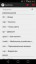 >>347912 |
| >> | >>347929 |
| >> | >>347923 |
| >> | >>347931 |
| >> | >>347927 |
| >> | >>347934 |
| >> | File: 14101012680170s.jpg (154.00 KB, 1080x1920)>>347937 |
| >> | >>347934 |
| >> | >>347938 |
| >> | >>347940 |
| >> | >>347938 |
| >> | >>347942 |
| >> | >>347939 |
| >> | >>347943 |
| >> | >>347946 |
| >> | Даша ушёл что-то новое пилить, тихо не буем мешать ему, тссс... |
| >> | >>347951 |
| >> | При погашенном экране, но при открытом ДЧ вибрация удобна тем, что могу пока на компьютере что-то делать, не отвлекаясь и не думая об усиленно тратящемся от включенного экрана аккумуляторе. И только когда планшет загудит, включить экран и посмотреть, что тому причиной. У меня не всегда есть возможность одновременно мониторить двачи. |
| >> | >>347950 |
| >> | >>347954 |
| >> | >>347950 |
| >> | >>347955 |
| >> | >>347956 |
| >> | >>347954 |
| >> | >>347957 |
| >> | >>347958 |
| >> | >>347960 |
| >> | >>347959 |
| >> | >>347936 |
| >> | >>347965 |
| >> | >>347961 |
| >> | File: 14101027809120s.jpg (1024.00 B, 63x38)>>347960 |
| >> | >>347967 |
| >> | File: 14101029084460s.jpg (54.00 KB, 441x307)>>347970 |
| >> | >>347968 |
| >> | >>347972 |
| >> | >>347951 |
| >> | File: 14101031632030s.jpg (145.00 KB, 720x1280) 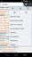 >>347973 |
| >> | >>347977 |
| >> | >>347975 |
| >> | >>347977 |
| >> | >>347981 |
| >> | >>347982 |
| >> | >>347982 |
| >> | >>347984>>347985 |
| >> | >>347988 |
| >> | File: 14101121657200s.jpg (181.00 KB, 720x1280) 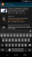 Почему в строке поиска выводится оранжевая иконка, когда во всех остальных местах - чёрно-белая? |
| >> | >>348081 |
| >> | >>348094 |
| >> | >>347975 |
| >> | >>348114 |
| >> | File: 14101146215350s.jpg (6.00 KB, 251x241)нормальную иконку пилите блядь заебали нахуй |
| >> | >>348115 |
| >> | >>348117 |
| >> | >>348118 |
| >> | >>348119 |
| >> | File: 14101151232980s.jpg (1333.00 KB, 250x282)>>348118 |
| >> | >>348120 |
| >> | Один вопрос. В чем отличие от вортекского клиента? |
| >> | >>348137 |
| >> | Даааш, почему в твоей программе сверху есть кнопка меню при наличии у меня аппаратной кнопки? |
| >> | >>348142 |
| >> | >>348143 |
| >> | >>348143 |
| >> | >>348148 |
| >> | >>348148 |
| >> | >>348167 |
| >> | File: 14101181601600s.jpg (38.00 KB, 640x640) 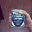 >>348142 |
| >> | Все-таки это разделители слишком тонкие, теперь на телефоне их считай, что и нет. Может быть, после каждого поста без ОТВЕТА поставить свободную строку, которую им заполнить при появлении? И хочу шапку поста иметь над картинкой, а не сбоку, так как не все данные о посте помещаются на экране и чем буквы больше, тем их меньше. |
| >> | Да, почему Аноним все еще виден у картинок, когда у простых постов его нет уже какую версию? |
| >> | File: 14101277292490s.jpg (2.00 KB, 956x628)>>348081 |
| >> | >>348174 |
| >> | >>348197 |
| >> | >>348214 |
| >> | Добавьте поиск в треде с подсветкой результатов как в браузере поиск на странице. |
| >> | Почему нельзя изменять масштаб текста в списке досок и тредов слева? Они же пиздец огромные! Хочу чтобы туда влезало гораздо больше инфы и еще надо как-то разделить по цвету или оттенку список досок от избранных и открытых досок и тредов, а то там каша ебаная. |
| >> | Добавь еще кнопку фонарика и сохранение геолокации, а то вдруг что ночью пойду в холодильник. |
| >> | По какому принципу синяя полоска для быстрой прокрутки тредов появляется? Иной раз раз десять приходится плавно свайпать справа, чтоб она появилась, и вместо появления прокрутки случайно нажимается кнопка "назад" или меню настроек выскакивает или предложение ответить на пост в зависимости от места свайпа. Вот если повернуть вертикально, а потом вернуть в горизонтальное положение, то сразу появляется. Нельзя подправить, чтоб она сразу появлялась, как в Вортексбраузере? В остальном претензий нет(даже без нейтрона привык за месяц), одни благодарности. |
| >> | >>348272 |
| >> | Пожалуй повторю реквест на нормальное масштабирование картинок. В стиле 4.4, а не как раньше. Это же банально удобно для одной руки! |
| >> | >>348116 |
| >> | File: 14101579694130s.jpg (42.00 KB, 316x429)>>348290 |
| >> | Благодарю автора за постоянное развитие браузера и желаю ему новых удачных идей. И еще более терпеливых пользователей его труда. |
| >> | >>348283 |
| >> | >>348315 |
| >> | >>348328 |
| >> | Не понимаю, какой смысл подсветки новых постов? Ладно, когда я нажал кнопку "Перейти" рядом с "N новых постов" - достаточно их один раз подсветить, нахрена они дальше подсвечиваются по одному по мере прокрутки вниз? Убого выглядит, отвлекает. Может это нужно только при включенным автообновлении тредов? Тогда, считаю, нужно отключить это при выключенном, подсвечивать только один раз после нажатия "Показать" или если проскроллил до них. |
| >> | >>348390 |
| >> | File: 14101719107100s.jpg (314.00 KB, 498x792)>>348215 |
| >> | >>348395 |
| >> | >>348396 |
| >> | >>348404 |
| >> | >>348395 |
| >> | Пожалуй, не слишком удобно, что на корне Двача не могу вызывать Настройки, обязательно на какую-нибудь доску надо зайти. |
| >> | >>348364 |
| >> | >>348233 |
| >> | Даша, заархивировать тред можно, а списка с архивированными тредами нет. Непорядок. Добавь в панель избранного раздел с ссылками на отправленные на архивач треды. |
| >> | Нужно чтобы после неудачной отправки сообщения с пасскодом он автоматически перелогинивался и попытка запостить повторялась, тогда можно и кнопку перелогина убрать будет. |
| >> | >>348553 |
| >> | >>348555 |
| >> | >>348567 |
| >> | Кстати, зачем в логотипе молния повернута? По-твоему это красиво? Нужно или делать ровно, или менять угол поворота в большую сторону, находя новые оси. Пока логотип выглядит попросту несовершенным, косячным, будто этот поворот не умышленный, а появился в результате ошибки. Имею художественное образование, если это имеет значение. |
| >> | >>348580 |
| >> | >>348584 |
| >> | >>348584 |
| >> | File: 14102053075540s.jpg (323.00 KB, 768x1280)Кажись, перепердолил... |
| >> | >>348605 |
| >> | File: 14102056829250s.jpg (323.00 KB, 720x1280) 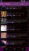 >>348605 |
| >> | >>348613 |
| >> | >>348605 |
| >> | >>348616 |
| >> | >>348590 |
| >> | >>348621 |
| >> | File: 14102065277870s.jpg (14.00 KB, 360x360)Подумываю насчёт светлого фона иконки. |
| >> | >>348599 |
| >> | File: 14102068324570s.jpg (10.00 KB, 360x360)>>348631 |
| >> | >>348631 |
| >> | >>348631 |
| >> | Афтар зАпили ты уже в гугл плей. |
| >> | >>348644 |
| >> | >>348652 |
| >> | >>348654 |
| >> | File: 14102087368510s.jpg (19.00 KB, 768x1280)>>348652 |
| >> | >>348654 |
| >> | >>348659 |
| >> | >>348663 |
| >> | Короче, я спать, надеюсь ты разберешься с поворотом. |
| >> | >>348668 |
| >> | >>348659 |
| >> | >>348659 |
| >> | >>348692 |
| >> | >>348672 |
| >> | >>348672 |
| >> | File: 14102282561370s.jpg (37.00 KB, 394x401) 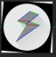 Вот так нужно сделать. Выделенные цветом линии должны быть параллельны. Красные линии должны быть горизонтальными. |
| >> | >>348702 |
| >> | Обновился на новую тестовую версию, вроде всё нормально работает. |

| >> | Перекат - https://2ch.hk/mobi/res/348752.html |
| >> | >>348697 |
| >> | >>348717 |
| >> | Свежая версия куклоскрипта до сих пор не обновляет тред. Индикатор загрузки крутится без всякой загрузки. Фавикон не мигает на новые посты, которые можно получить только по F5. |
| >> | >>348830 |
| >> | Мое официальное мнение — дэшчан стал просто охуительным. Красиво выглядит, шустро работает. |
| >> | >>352620 |
| >> | >>352622 |